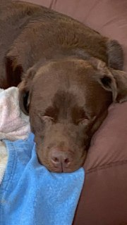
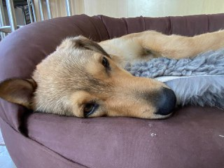
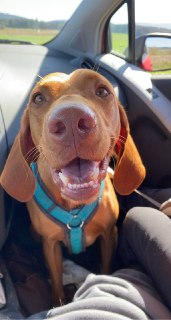

About me
Who is this Dominik?!
I am a simple college student who has no special qualifications but can talk all day about nonsense. I try various things mostly in a hoby like fashion.
Hobbys
Music: I love listening and making music. I play the trumpet, guitar and piano.
Boardgames: Playing boardgames brings me joy and I love to play challenging games.
Pen and Paper: I am a great DM and creative player.
Photography: Taking pictures and making (funny) videos is part of my daily life.
Favourite Cuisines
- Italian
- Japanese
- Vietnamese
- Mexican
- German
Animals
I love all animals but especially dogs. Here some pictures and a video of one of my newest dog mates named Wolke.
| Dog | Picture |
|---|---|
| Chester |  |
| Peco(rino) |  |
| Ben |  |
Pen and Paper
Currently I am playing in two different groups. One DnD and one 'Edge of the Empire' group. The latter is a Star Wars RPG. There I am playing a Jawa mechanic. Here is my character sheet for Snut: